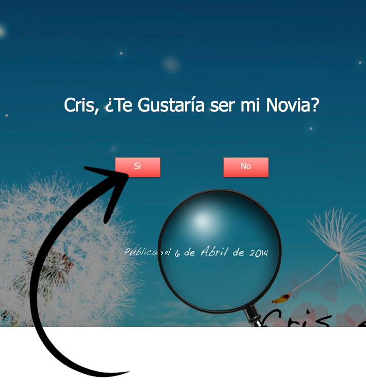

<div id="fb-root"></div>
<script>(function(d, s, id) {
  var js, fjs = d.getElementsByTagName(s)[0];
  if (d.getElementById(id)) return;
  js = d.createElement(s); js.id = id;
  js.src = 'https://connect.facebook.net/es_LA/sdk.js#xfbml=1&version=v2.12&appId=566053603589980&autoLogAppEvents=1';
  fjs.parentNode.insertBefore(js, fjs);
}(document, 'script', 'facebook-jssdk'));</script>

<div data-page="tabbar" class="page toolbar-fixed">
  <div class="navbar">
    <div class="navbar-inner">
      <div class="left"><a href="index.html" class="close-panel link icon-only"><i class="icon icon-back"></i></a></div>
      <div class="right"><i class="icon icon-clock2top"></i>&nbsp;&nbsp;Historia</div>
      <div class="right"><a href="#" class="link open-panel icon-only"><i class="icon icon-bars"></i></a></div>
    </div>
  </div>

  <div class="page-content hide-bars-on-scroll">
   

<!-- 🍎 INTRO --> 
          <center>
          
          </center>

 <div class="tabs">
      <div id="tab-1" class="tab active"> 
        <div class="content-block">

<div class="fb-comments" data-href="http://1.linktu.xyz/criseivan/" data-numposts="5"></div>

<p> Te amo mucho. Atte. <b>Iván HG</b> <i class="icon icon-heart"></i></p>


        </div>
      </div>
      


<!-- 🍎 --> 

    </div>

        </div>
      </div>
    </div>
  </div>
</div>